Approach to Sexually Transmitted Infection
- Most chlamydia and half of gonorrhea are asymptomatic. That is the whole argument for screening rather than waiting for symptoms.
- One swab tests for both chlamydia and gonorrhea. A self-collected vaginal swab is as accurate as a clinician-collected one. Urine works but must be first-catch, with no voiding in the last 2 hours.
- Untreated chlamydia is the big fertility story: up to 30% develop PID, leading to tubal scarring, infertility and ectopic pregnancy.
- Syphilis stages: painless chancre (primary) → rash on palms and soles + condyloma lata (secondary) → latent → tertiary (neuro, cardiovascular, gummatous). Treat with penicillin G; if allergic, the only satisfactory answer is desensitize, then give penicillin.
- PID is polymicrobial and is NOT always an STI. Fewer than 50% culture positive for chlamydia or gonorrhea. Normal vaginal organisms can ascend too — so never imply infidelity.
- PID treatment runs 14 days, versus 7 days for uncomplicated chlamydia. Tubo-ovarian abscess is treated with IV antibiotics, not routine drainage.
- Chandelier sign (cervical motion tenderness) + fever + discharge + raised WBC in a young sexually active woman = PID until proven otherwise — after a negative pregnancy test.
Learning Objectives
- Describe clinical symptoms and findings for various STI presentations.
- Outline diagnostic criteria for common STIs.
- Apply treatment regimens to common STIs.
- Define PID, its treatment and clinical outcomes.
Dr. Stephanie Black's 30-minute module. She discloses an advisory board affiliation with Bayer regarding intrauterine contraception, which does not come up in this talk.
This deck is dated 2021, and STI treatment has moved since. Most notably, the gonorrhea dose on these slides (ceftriaxone 250 mg IM) is lower than current guidance — the CDC moved to 500 mg IM as a single dose in its 2021 update, and routine co-administration of azithromycin was dropped in favour of doxycycline when chlamydia has not been excluded. The doses reproduced below are the ones on the slides, because those are what the module is testing you on. Before you prescribe any of this for a real patient, check the current Canadian Guidelines on Sexually Transmitted Infections — which the public health module (4.7) tells you to bookmark for exactly this reason.
The Bacterial STIs
Chlamydia, gonorrhea, syphilis.
What Counts as an STI
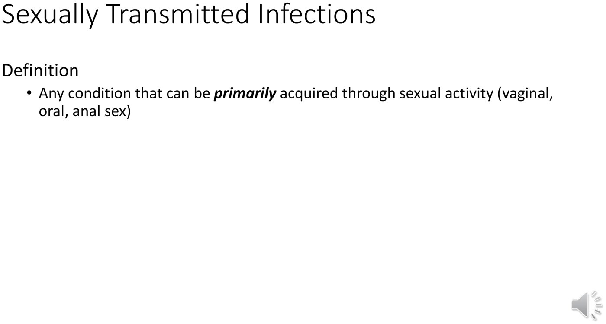
Any condition primarily acquired through sexual activity — vaginal, oral, anal, or a combination.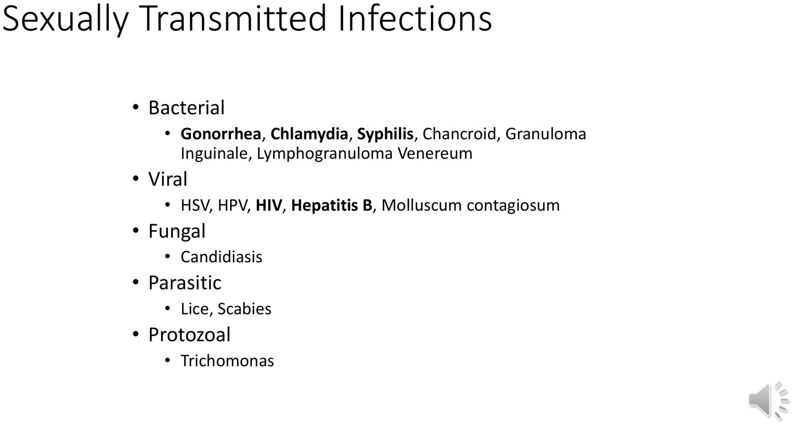
Bacterial, viral, fungal, parasitic and protozoal. This talk focuses on the bacterial and viral ones.Chlamydia
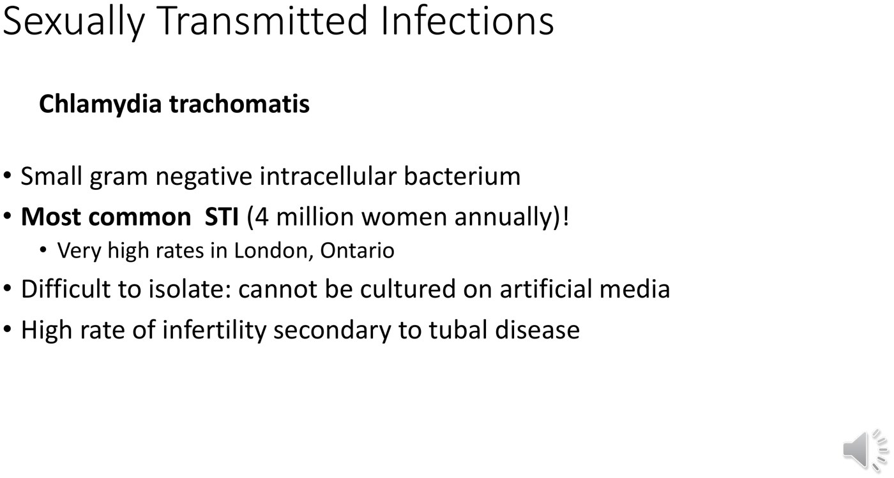
Chlamydia trachomatis — small gram-negative intracellular bacterium. Cannot be cultured on artificial media.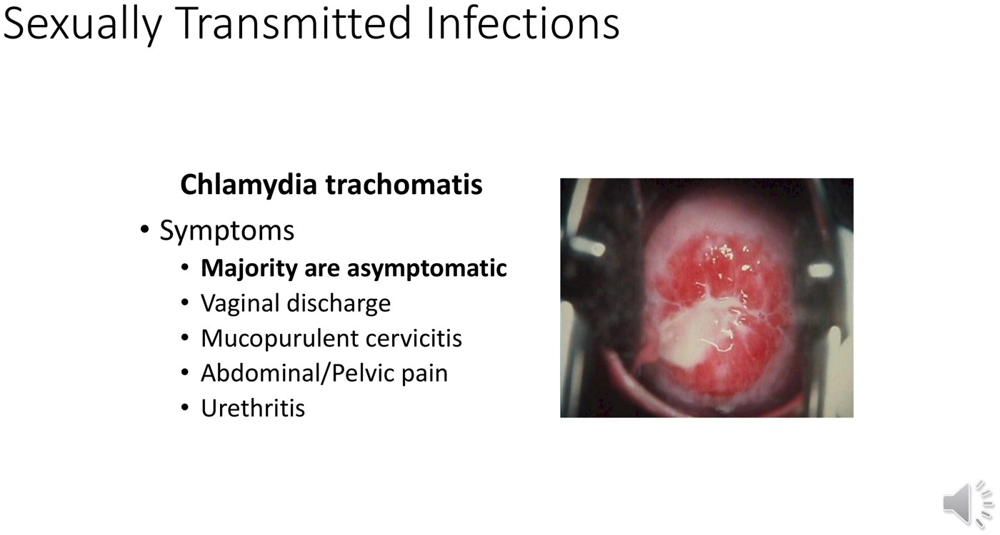
The majority are asymptomatic. When symptomatic: discharge, mucopurulent cervicitis (the yellow-green pus at the os in the photo), pelvic pain, urethritis.- Most common STI worldwide — the deck's figure is 4 million women annually. London, Ontario has one of the highest chlamydia incidence rates in Canada.
- Screen opportunistically. Routine physicals, Pap appointments and other visits are the moment to raise it — especially in people with HIV or who are immunocompromised.
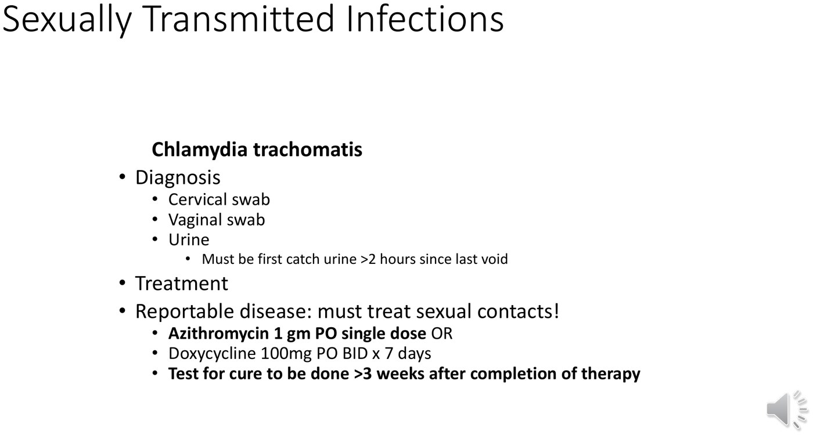
| Specimen | Notes |
|---|---|
| Cervical or vaginal swab | Most accurate. A patient-collected vaginal swab is as accurate as a clinician-collected cervical swab — a finding that matters a lot for access |
| Urine | Must be first-catch, not the clean-catch you send for a UTI, and the patient must not have voided in the last 2 hours |
- Reportable disease — public health is notified.
- Sexual partners must be contacted and treated. No sexual contact until both she and her partners have completed treatment.
- Treatment: doxycycline 100 mg PO BID × 7 days, or azithromycin 1 g PO × 1.
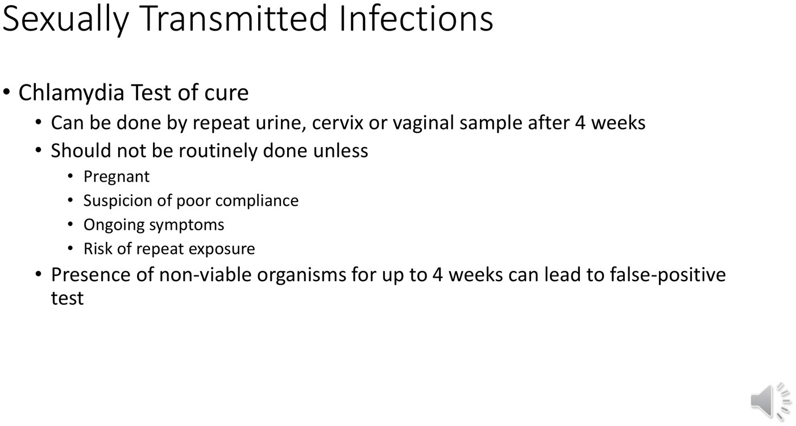
When should a test of cure for chlamydia be performed?
a) If the infected person is pregnant · b) If asymptomatic at diagnosis · c) If they have PID at diagnosis · d) 2 weeks after treatment
Answer: (a) pregnancy. Note why (d) is wrong — 2 weeks is too early, and you would get a false positive from dead organisms.
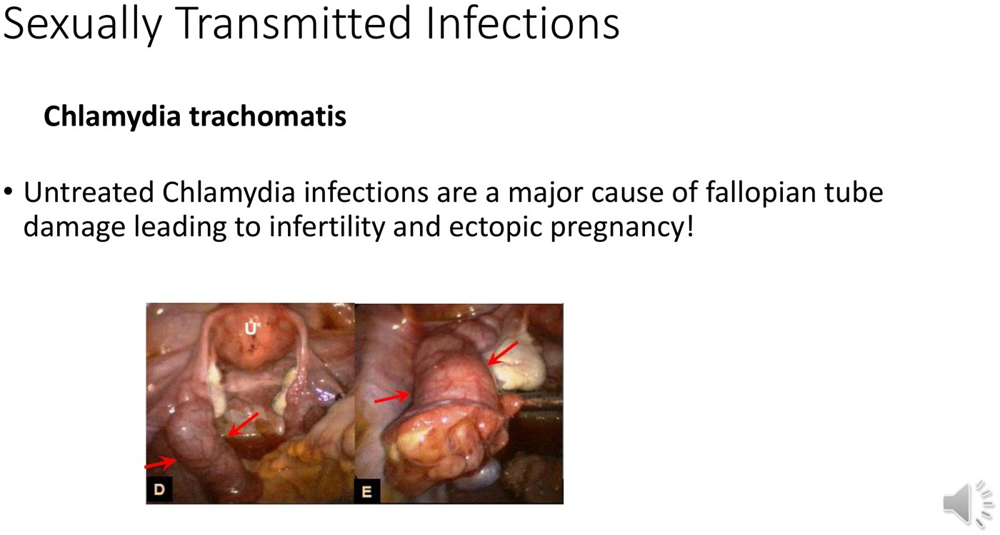
Why untreated chlamydia matters. Laparoscopic views of a dilated, scarred tube. Scarring blocks the tube → infertility and ectopic pregnancy.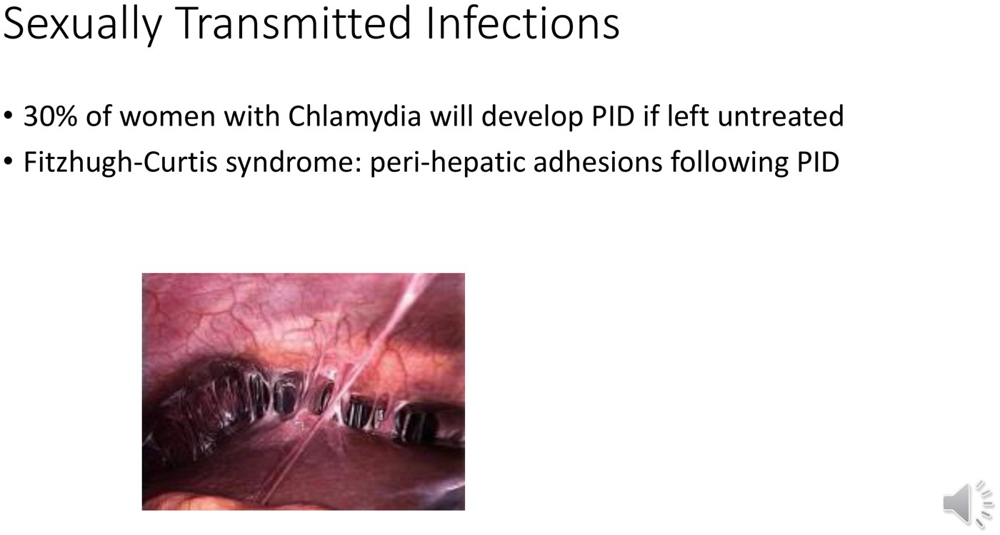
Up to 30% of untreated chlamydia progresses to PID. The liver image is Fitz-Hugh-Curtis — perihepatic adhesions, pathognomonic for previous PID.Gonorrhea
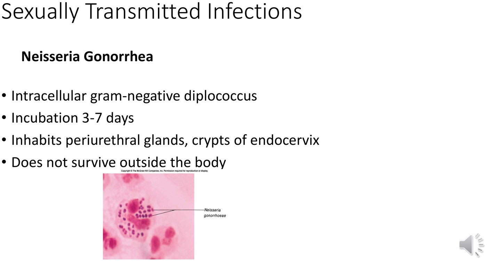
Gram-negative diplococcus, incubation 3–7 days. Inhabits the periurethral glands and endocervix. Does not survive outside the body.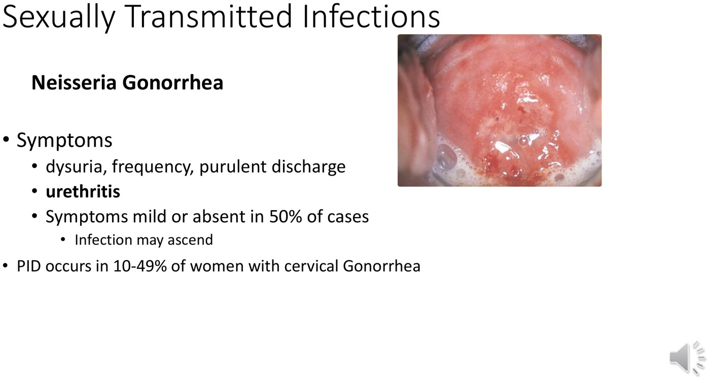
Urethritis is the commonest symptom — dysuria, frequency, purulent discharge. Mild or absent in 50%.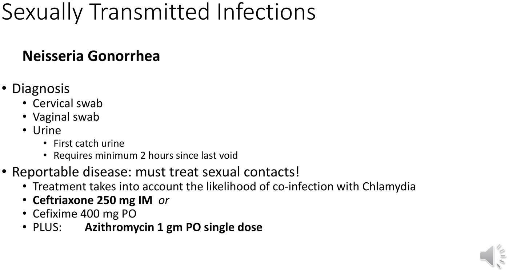
- Same swab as chlamydia — you do not need two samples. Urine rules are identical (first-catch, 2 hours).
- Also ascends to cause PID, in 10–49% of women with cervical gonorrhea.
- Reportable, and partners must be treated.
If a patient is gonorrhea-positive, they usually also have chlamydia, so you treat for both. The inverse is not true: chlamydia commonly exists on its own.
The deck's regimen: ceftriaxone 250 mg IM (or cefixime 400 mg PO) plus azithromycin 1 g PO × 1 for the chlamydia. See the dating caveat at the top of this page — the ceftriaxone dose has since increased.
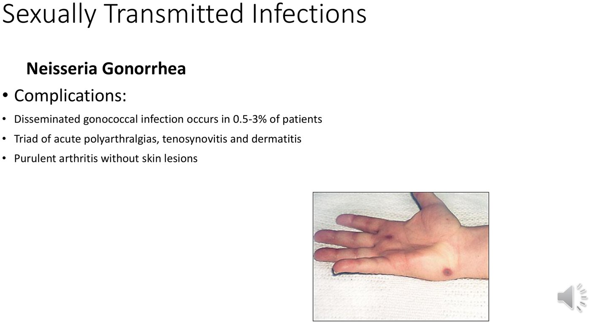
Syphilis
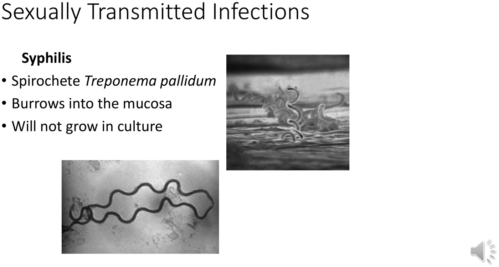
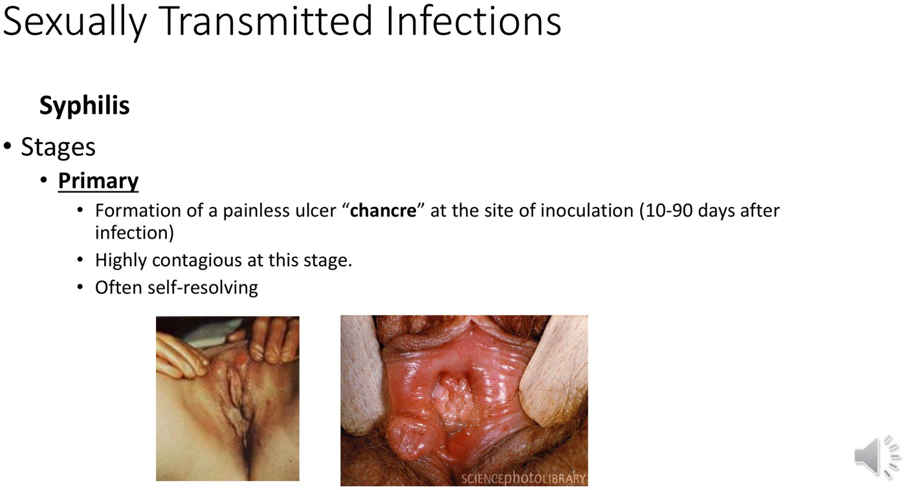
Primary: a painless ulcer (chancre) at the inoculation site, 10–90 days after infection. Self-resolving, and because it is painless it is easily missed — while being highly contagious.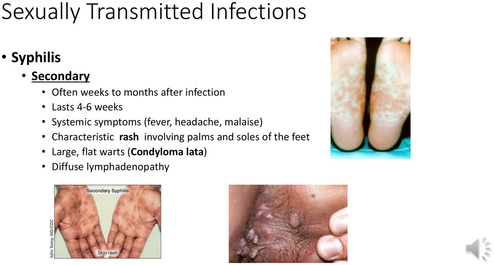
Secondary: weeks to months later, lasting 4–6 weeks. Non-specific systemic symptoms plus a rash on the palms and soles — most other rashes spare those.- Condyloma lata: large flat warts on the genitals in secondary syphilis. Distinguish from HPV warts, which are cauliflower-like.
- Diffuse lymphadenopathy is also part of the secondary picture.
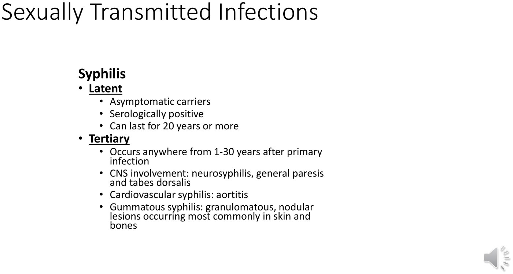
| Stage | Timing | Features |
|---|---|---|
| Primary | 10–90 days | Painless chancre; highly contagious |
| Secondary | Weeks–months; lasts 4–6 weeks | Fever, headache, malaise · rash on palms and soles · condyloma lata · lymphadenopathy |
| Latent | Can last 20+ years | Asymptomatic carrier, serologically positive. Can be transmitted vertically to the fetus |
| Tertiary | 1–30 years after primary | Neurosyphilis (general paresis, tabes dorsalis) · cardiovascular (aortitis) · gummatous (granulomatous nodular lesions in skin and bone). Life-threatening. |
The recording states that syphilis is not sexually transmitted during the latent stage, only vertically. That is too absolute. The standard division is early latent (within about the first year), where relapses of infectious secondary lesions can occur and sexual transmission is possible, versus late latent, where it is generally not. Vertical transmission remains possible throughout. The slide itself only says "asymptomatic carriers, serologically positive" — it does not make the claim. Worth confirming with your tutor which version the exam wants.
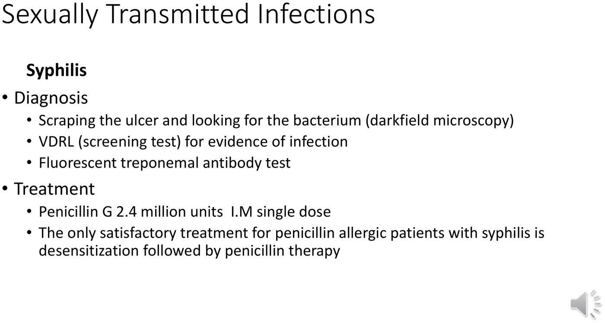
There is no alternative regimen for penicillin allergy. The only satisfactory treatment is desensitization, followed by penicillin. Remember that one — it is unusual, and therefore examinable.
Which accurately describes secondary syphilis?
a) Neurosyphilis with CNS involvement · b) Formation of a painless ulcer (chancre) · c) Asymptomatic and non-transmittable · d) Condyloma lata, diffuse lymphadenopathy and a rash involving palms and soles
Answer: (d). (a) is tertiary, (b) is primary, (c) describes latent.
The Viral STIs
Hepatitis B and HIV — short, but the serology is examinable.
Hepatitis B
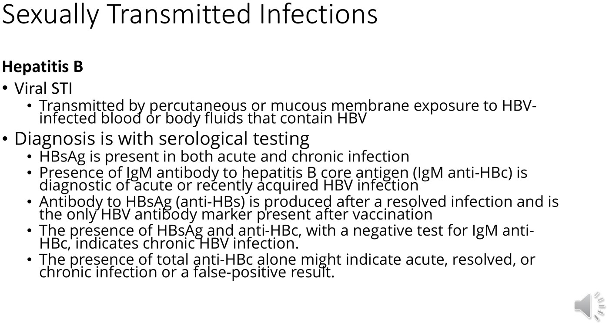
| Marker | Means |
|---|---|
| HBsAg | Present in both acute and chronic infection — on its own it does not distinguish them |
| IgM anti-HBc | Diagnostic of acute or recently acquired infection |
| anti-HBs | Produced after a resolved infection, and is the only HBV antibody marker present after vaccination |
| HBsAg + anti-HBc, IgM anti-HBc negative | Chronic HBV infection |
| Total anti-HBc alone | Could be acute, resolved, chronic, or a false positive |
- No specific therapy — treatment is supportive.
- Vaccination is preventative and part of routine immunization.
Caption warning: the auto-transcript of this section repeatedly writes "HPV" where the lecturer says HBV, and garbles the antibody names. The table above is taken from the slide, not the transcript.
HIV
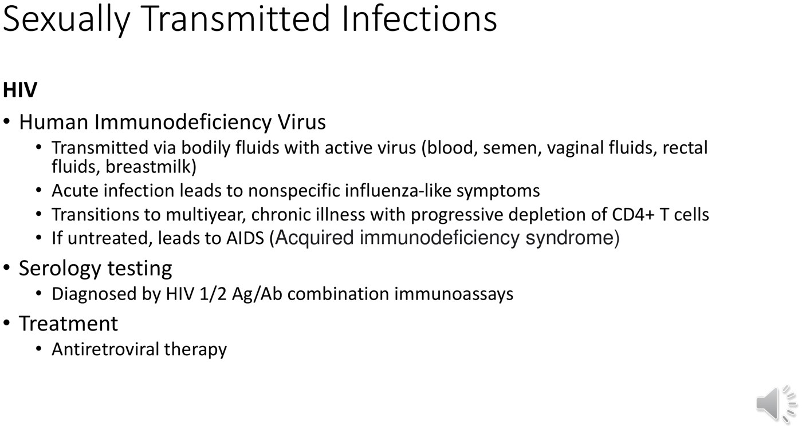
- Transmitted in: blood, semen, vaginal fluids, rectal fluids, breast milk. Not in saliva.
- Acute HIV is a non-specific influenza-like illness, often short-lived and easily missed.
- Untreated, it becomes a multi-year chronic illness with progressive CD4+ T cell depletion → AIDS.
- Diagnosis: HIV-1/2 antigen–antibody combination immunoassay. Treatment: antiretroviral therapy.
Pelvic Inflammatory Disease
The biggest single block of this lecture, and the one with the most clinical nuance.
The Case
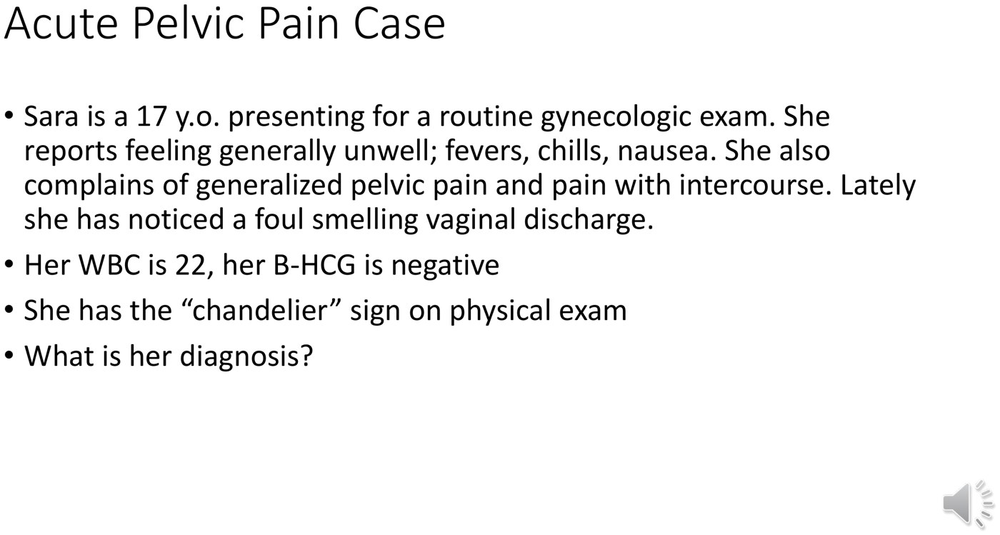
17-year-old · unwell with fevers, chills, nausea · generalized pelvic pain · dyspareunia · foul-smelling discharge · β-hCG negative · WBC 22 · chandelier sign.
The chandelier sign is cervical motion tenderness: moving the cervix on bimanual exam reproduces exquisite pain — supposedly enough to make the patient reach for the chandelier.
Diagnosis: PID. Note the order of operations — the negative pregnancy test comes first, because ectopic pregnancy is the thing that kills her (see 4.9).
What PID Is
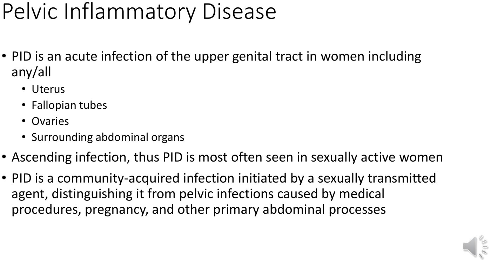
An acute infection of the upper genital tract — uterus, tubes, ovaries, surrounding organs. More than cervicitis or vaginitis.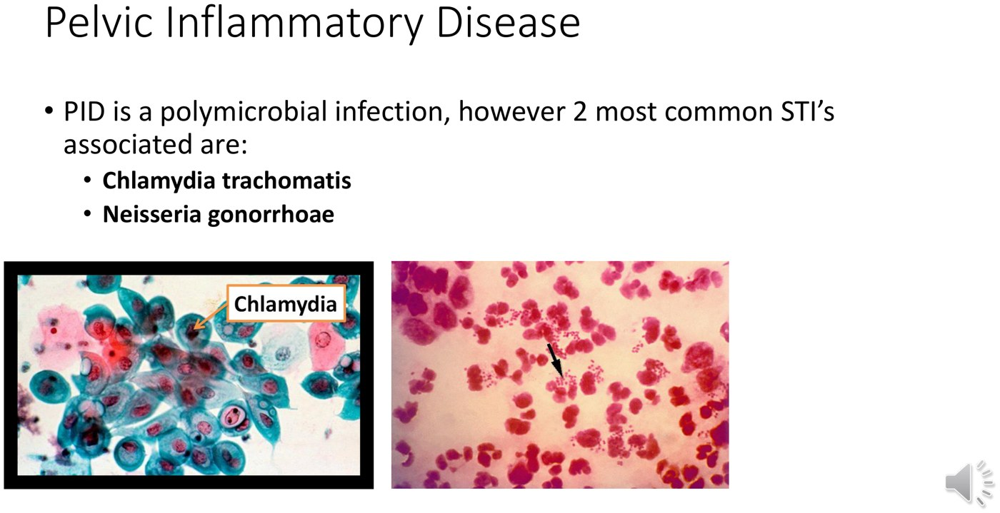
Polymicrobial, with chlamydia and gonorrhea the two commonest associated STIs.The definitional boundary matters: PID is a community-acquired infection initiated by a sexually transmitted agent. A pelvic infection or abscess after a D&C or other procedure is not PID — nor are infections from pregnancy or primary abdominal processes.
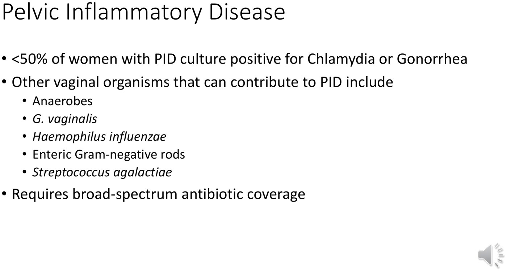
Fewer than 50% of women with PID culture positive for chlamydia or gonorrhea. Normal vaginal organisms — anaerobes, Gardnerella vaginalis, Haemophilus influenzae, enteric gram-negative rods, streptococci — can ascend and cause PID given the opportunity.
So do not assume, or imply, that a patient or her partner has been unfaithful. Being told you are being tested for gonorrhea and chlamydia is alarming; frame it as ruling things out, not accusing.
Because it is polymicrobial, treatment requires broad-spectrum coverage.
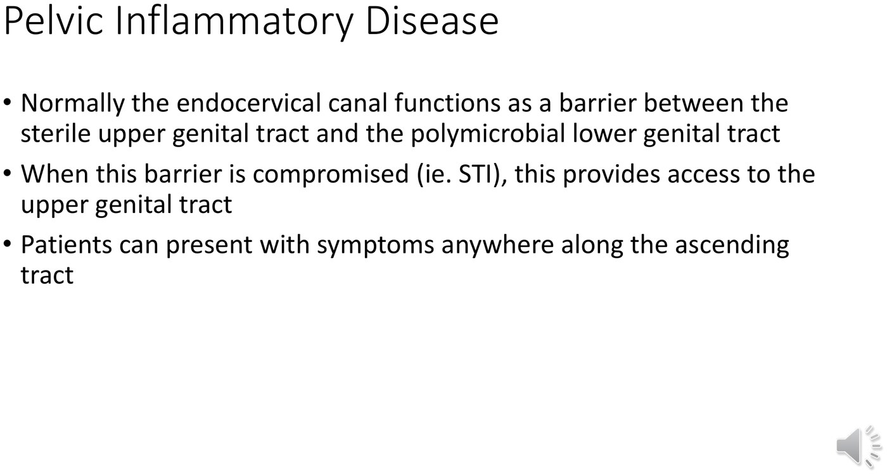
The mechanism. The endocervical canal is the barrier between the sterile upper tract and the polymicrobial lower tract. Alter the cervical mucus — sexual activity, an STI — and bacteria ascend.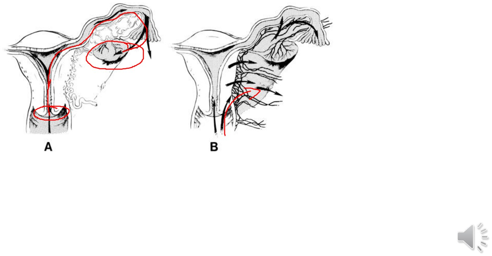
Two routes of spread: up through the uterus and out the tube (→ tubo-ovarian abscess), and lymphatic/haematogenous spread out to the parametrium.Epidemiology and Presentation
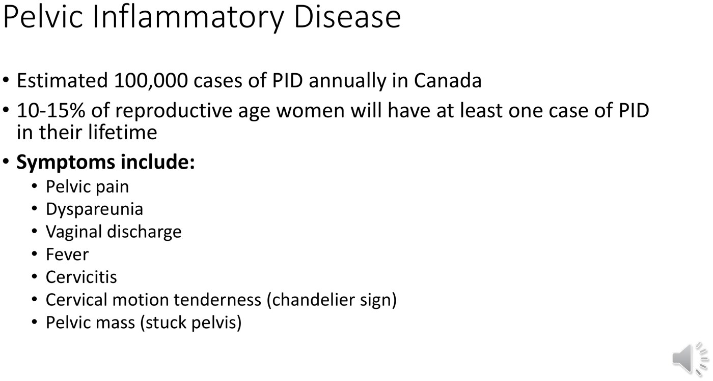
- ~100,000 cases annually in Canada. 10–15% of reproductive-age women will have at least one episode.
- Symptoms: pelvic pain · dyspareunia · vaginal discharge · fever · cervicitis · cervical motion tenderness · pelvic mass · "stuck pelvis" from adhesions binding the uterus to the sidewalls.
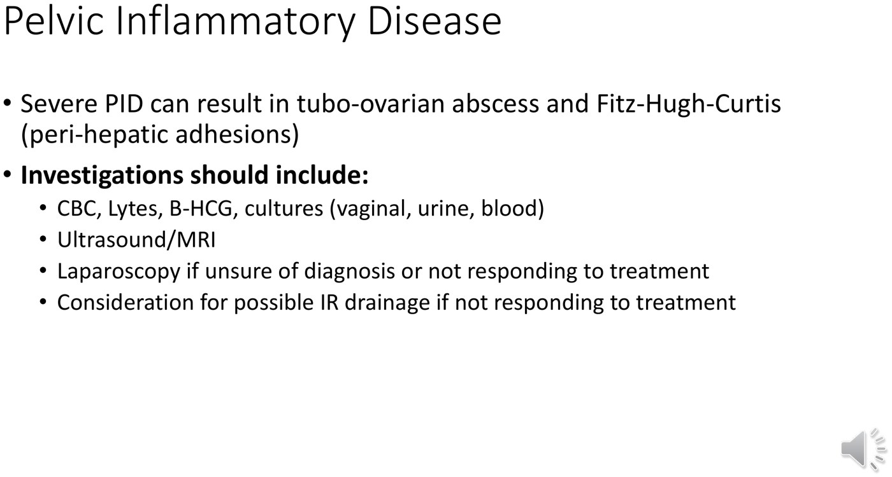
| Investigation | Why |
|---|---|
| Pregnancy test | Always. Rules out ectopic |
| CBC, electrolytes | Degree of inflammatory response, baseline |
| Vaginal, urine ± blood cultures | Blood cultures if she is unwell |
| Ultrasound | Usually. Looking for tubo-ovarian abscess, which changes management |
| MRI | Rarely, in unclear cases |
| Surgery | If the diagnosis is unclear or she is not responding. PID is largely a clinical diagnosis |
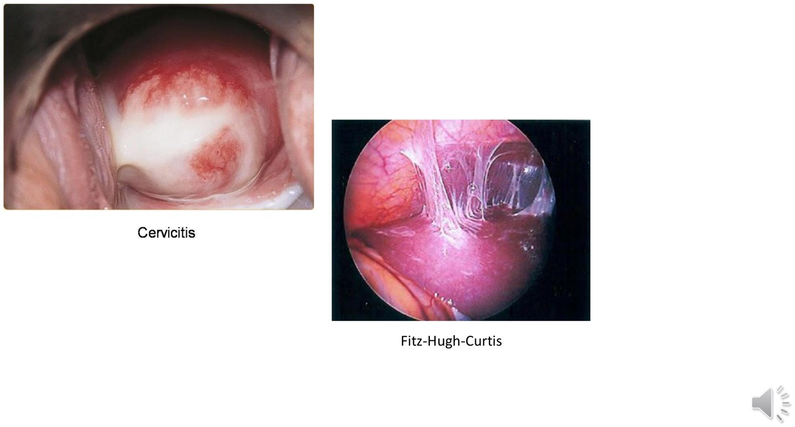
Left: a red, angry cervix with mucopurulent discharge — classic cervicitis. Right: Fitz-Hugh-Curtis perihepatic adhesions.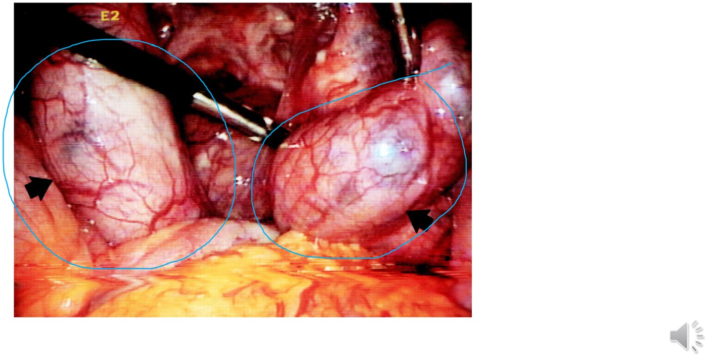
Tubo-ovarian abscess at laparoscopy. Structures are hard to identify because of the dense adhesions — which is precisely why operating here threatens fertility.Treatment
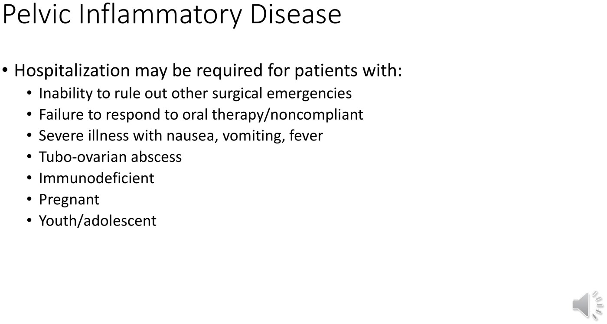
| Admit if… | Because |
|---|---|
| Cannot rule out a surgical emergency | Ectopic, appendicitis |
| Failed oral therapy, or non-compliant | Needs IV and supervision |
| Severely ill (nausea, vomiting, fever) | Cannot tolerate oral medication |
| Tubo-ovarian abscess | Needs IV antibiotics for penetration into the abscess |
| Pregnant | More serious — always inpatient |
| Youth / adolescent | Often, but not always. Usually driven by psychosocial factors — access to antibiotics, compliance |
A tubo-ovarian abscess is treated with IV antibiotics, not with incision and drainage. That is the opposite of how you treat abscesses almost everywhere else in the body. Surgical or interventional-radiology drainage is only for patients who fail to respond.
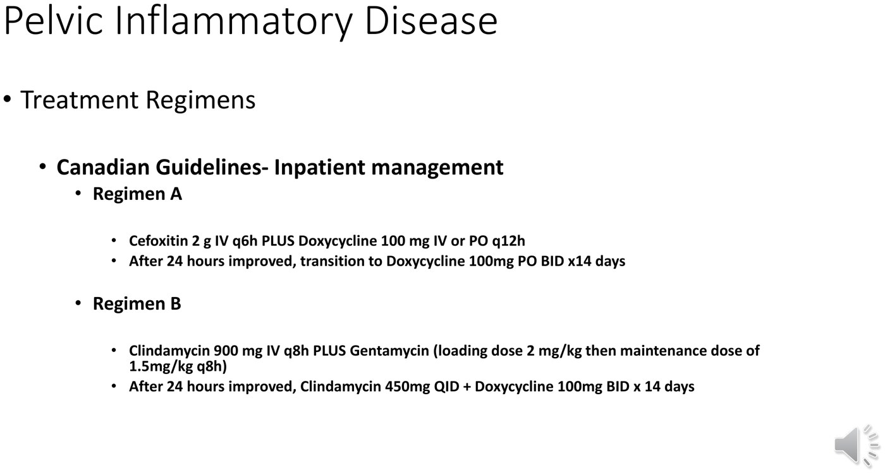
Inpatient. A: cefoxitin 2 g IV q6h + doxycycline 100 mg IV/PO q12h → after 24 h improved, doxycycline PO BID to complete 14 days. B: clindamycin 900 mg IV q8h + gentamicin (2 mg/kg load, then 1.5 mg/kg q8h) → clindamycin 450 mg QID + doxycycline to 14 days.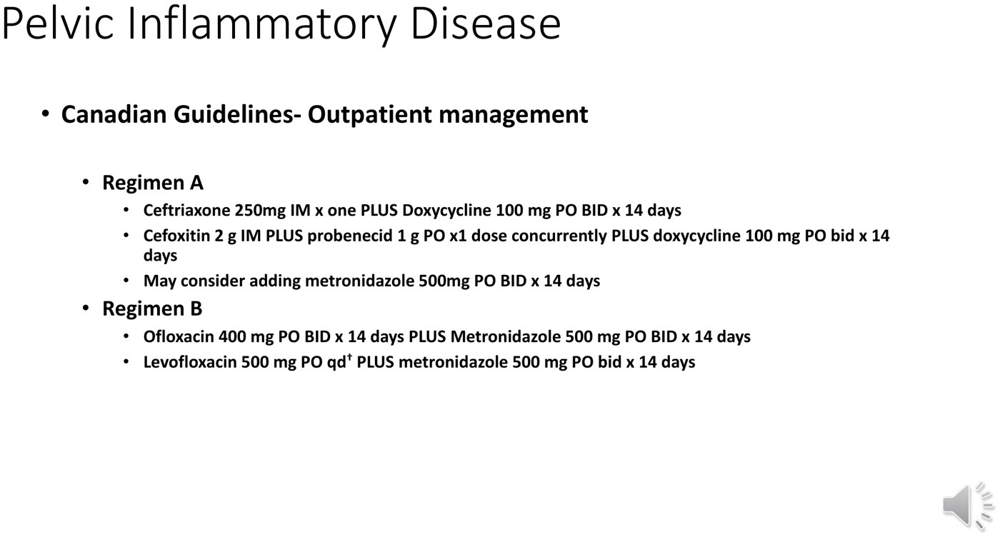
Outpatient. A: ceftriaxone 250 mg IM × 1 (or cefoxitin 2 g IM + probenecid 1 g PO) + doxycycline 100 mg PO BID × 14 days; consider adding metronidazole 500 mg BID × 14 days for anaerobes. B: ofloxacin or levofloxacin + metronidazole × 14 days.The number to hold onto: 14 days for PID, versus 7 days for uncomplicated chlamydia. That contrast is exactly the kind of thing an exam asks.
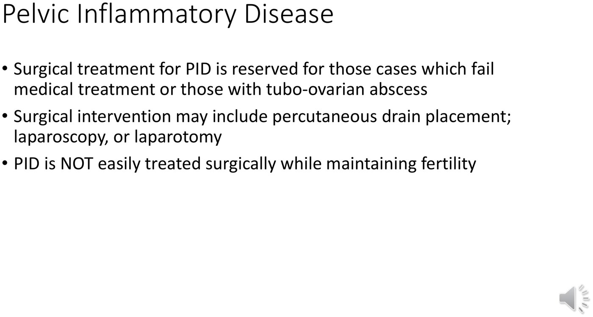
Which of the following is FALSE regarding PID?
a) If left untreated, PID can lead to pelvic and liver adhesions, chronic pain and infertility · b) Individuals with PID test positive for chlamydia and/or gonorrhea in the majority of cases · c) PID should be treated as an inpatient in pregnancy · d) PID is a polymicrobial infection
Answer: (b) is the false one. Fewer than 50% culture positive. The other three are all true.
The Rest
The lecturer marks these slides "for interest only" — but herpes, warts and trichomonas are common enough that they are worth knowing.
Herpes, Warts and Trichomonas
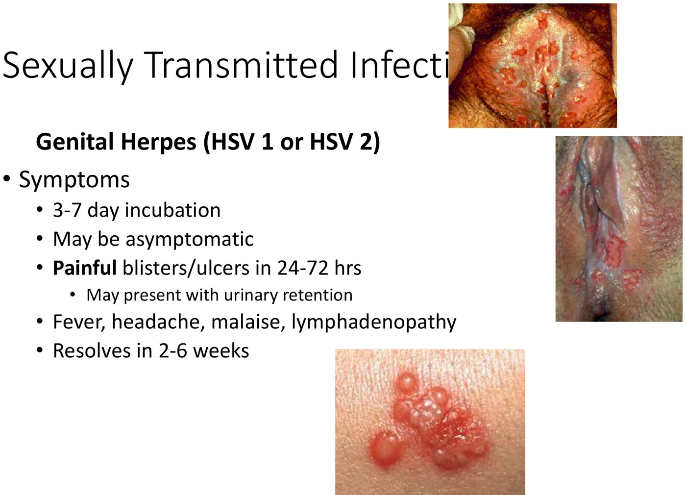
Genital herpes. Incubation 3–7 days; painful blisters or ulcers within 24–72 h; may cause urinary retention; resolves in 2–6 weeks. Transmissible from asymptomatic carriers. Diagnose by unroofing a lesion for PCR; treat with acyclovir, famciclovir or valacyclovir.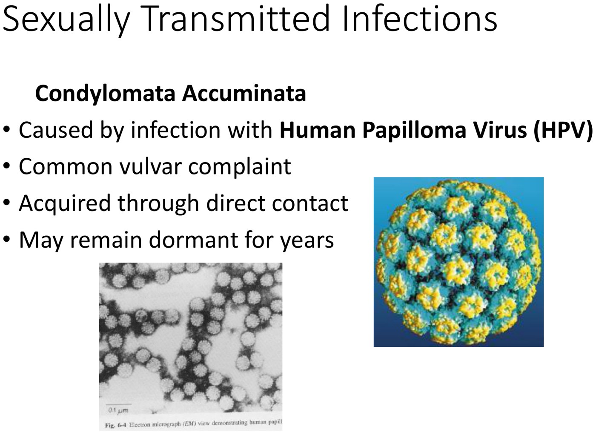
Condylomata acuminata — genital warts, caused by HPV. May remain dormant for years. Usually a clinical diagnosis; biopsy when uncertain. Treat topically (podophyllin, imiquimod, liquid nitrogen, TCA) or surgically. The HPV story continues in 4.8.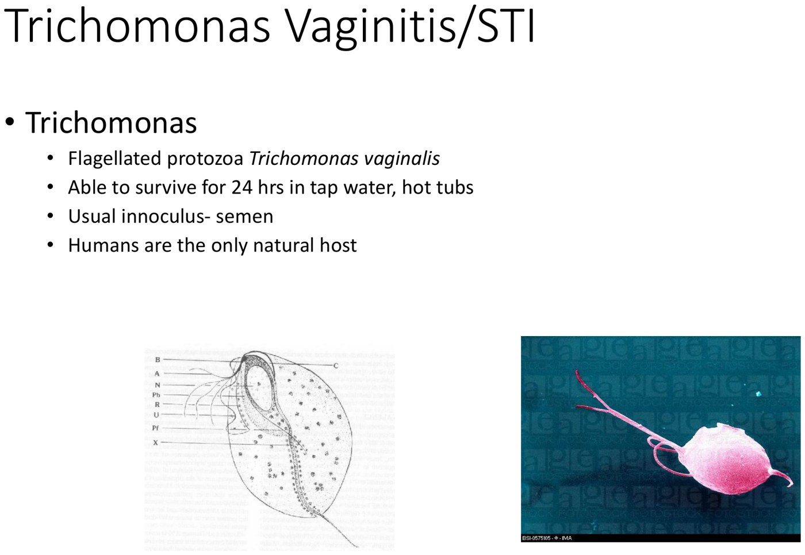
Trichomonas. Flagellated protozoan; survives 24 h in tap water and hot tubs; humans are the only natural host. Full treatment detail is on 4.5.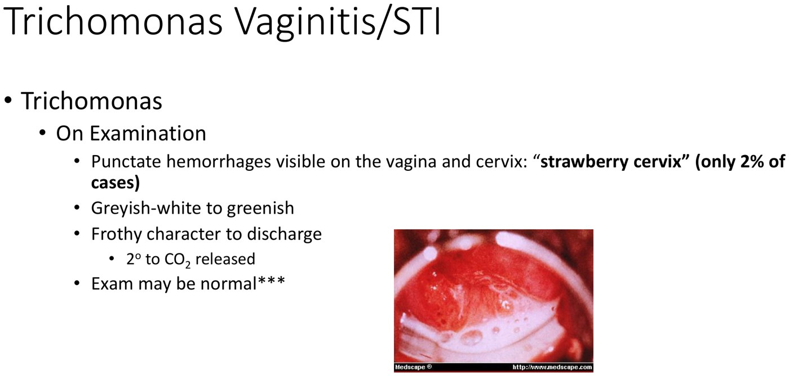
"Strawberry cervix" — punctate haemorrhages. Famous, but present in only about 2% of cases. Likewise the classic "frothy" discharge shows up in fewer than 10%.The deck also covers granuloma inguinale (donovanosis), lymphogranuloma venereum, molluscum contagiosum and pediculosis pubis in its interest-only section. For anything you need to actually prescribe from, the lecture points you to the CDC and Health Canada / Public Health Agency of Canada STI guidelines.
Built from Dr. Stephanie Black's "Approach to Sexually Transmitted Infection" module (30 min): the recorded lecture, its slide deck ("STI 2021"), and the module's own concept-check questions, which are reproduced here with their answers. All images are slides from that deck. The auto-transcript has substantial caption errors — PID rendered as "Paddy," Treponema pallidum as "noma pallidum," VDRL as "vedral," chancre as "tinker," condyloma lata as "kind of omolara," cefoxitin as "SAF oxygen," and HBV consistently as "HPV" — so every drug name and dose here was taken from the slides rather than the audio. Two accuracy flags are marked in the text: the 2021 gonorrhea dosing and the spoken claim about transmission during latent syphilis. Related pages: 4.5 for the discharge work-up, 4.7 for reporting and epidemiology, 4.8 for HPV.